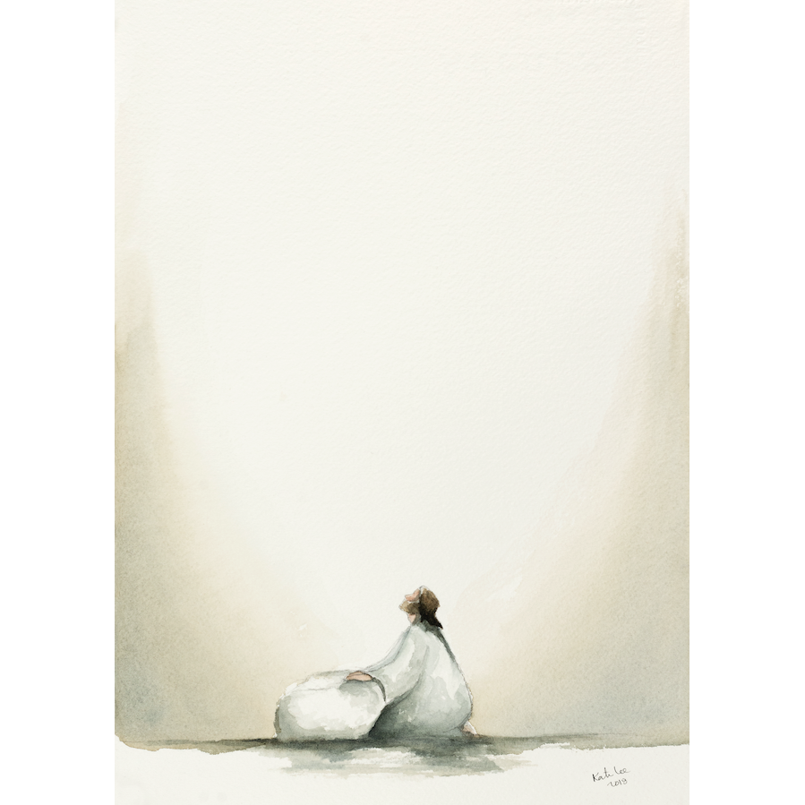
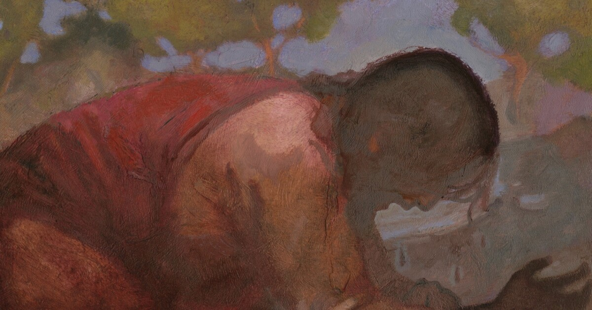
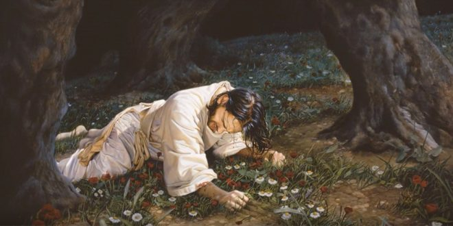

These are depictions of Christ in Gethsemane that have impacted me:

Kate Lee: "Atonement"
I like the simplicity of this piece of art. I like how in the actual one, it is on a texturized canvas.

J. Kirk Richards: "Let this cup pass from me"
To me, this is a very intense depiction of the atonment. The drops of blood comming from his head emphasize the immense pain that He suffered for me.

Liz Lemon Swindle: "Christ knows our pain"
This is also another intense piece of art. His clinched fists and facial expressions, to me, show that this part of the atonement was extraordinarily painful.